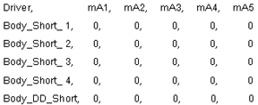
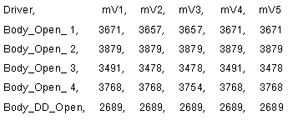
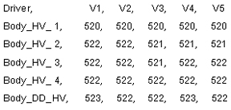

Table 3: 1.5T Surface Mode, Any LPCA
 | In 1.5T Surface Mode the Dynamic Disable lines are reverse-biased during transmit so no current should flow. A significant amount of current flow would indicate a short-circuit condition on the circuit. Large current flow indicates something like a shorted PIN diode or shorted cable while smaller current flow may indicate a leaky PIN diode. Leaky PIN diodes can be a source of noise. |
 | In this test the Dynamic Disable lines are forward-biased. Voltage drops like those shown at the left should be seen. Circuits exhibiting significantly higher voltage drops indicate that the circuit may be open (line is disconnected) or that the circuit has a high resistance (poor connection). Anything over 7000 usually indicates an open circuit. Check the connections in the circuit. |
 | In 1.5T Surface Mode high voltage is applied during transmit so the results should always look similar to what is shown on the left. These are less than what was seen in the 1.5T Body Mode HV Test due to voltage sag. This is normal. |